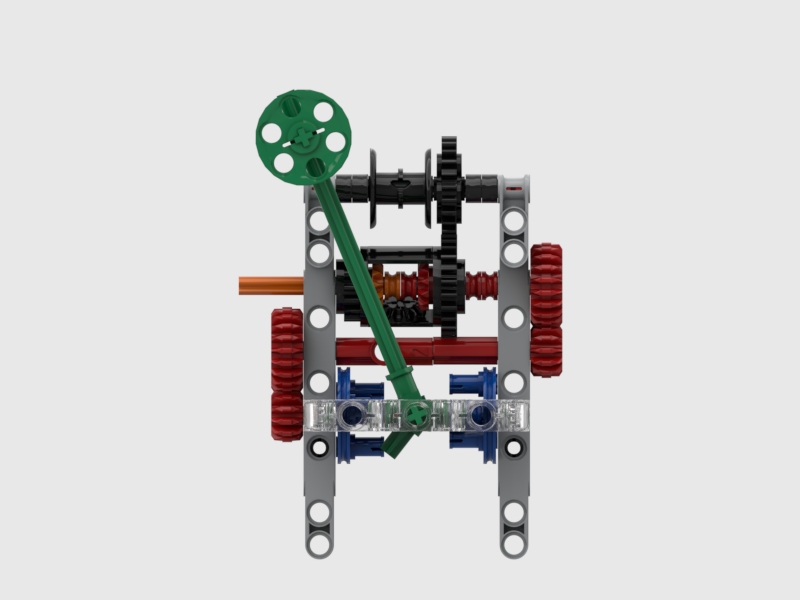

Metronome

Weight driven metronome. Weight hangs over the black pulley. One should fix the orange axle before starting the metronome. The blue components and green pendulum form an escapement pair, which both controls the speed and produce “tick tick” sounds. When not operating, the escapement pair automatically locks the red train. Then, one can unlock the orange axle, and rotate it to pull up the weight.
Acknowledgement
Sudied from “Mr. Smith” in this link.
Picture rendered with BrickLink Studio Oct. 2020